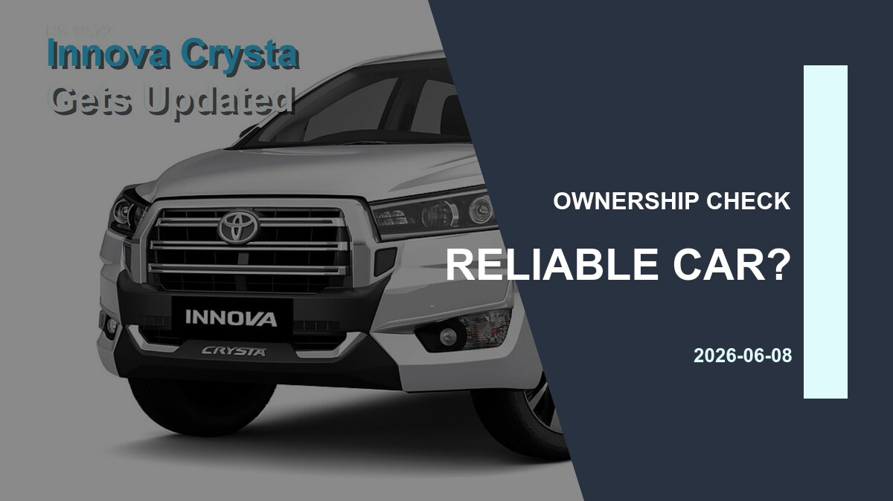

Car News
Most Reliable Car in India: Why the Safest Bet Is Usually Boring on Paper
Reliability is not only about engines that last. Indian buyers should weigh service network depth, parts cost, resale demand, safety upgrades and how calmly the car handles abuse over five years.